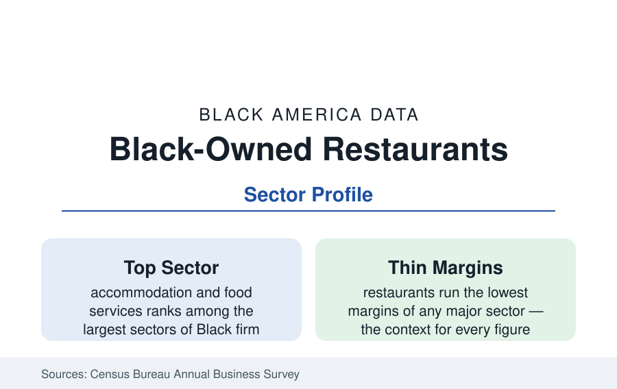

Black Business
Black-Owned Restaurants and Food Businesses: The Cornerstone Sector
Food service is among the largest Black business sectors — and the most exposed to the industry's thin margins. The Annual Business Survey and industry data.

Restaurants and food businesses are among the largest sectors of Black ownership in the Census data — tens of thousands of employer firms and a far larger universe of caterers, food trucks, bakers, and home-based food businesses in the nonemployer counts — and they carry an outsize cultural weight as the Black business the public actually visits. They are also, by the industry's own arithmetic, the hardest businesses in this reference to keep alive. This article reports the food-sector data.
The Sector's Shape
The Annual Business Survey places accommodation and food services among the top sectors of Black employer-firm ownership, with receipts concentrated in limited-service and full-service restaurants, catering, and food service contracting. The distribution within the sector follows the capital curve of the whole business section: a broad base of single-unit independents (the soul food restaurant, the barbecue institution, the neighborhood café — many of them decades-old landmarks in the city profiles' historic districts), a middle layer of multi-unit local operators, and a top tier of franchise portfolios and institutional food-service firms (the largest Black food businesses are contract feeders and franchise groups, some at national scale). The nonemployer layer is the sector's distinctive mass: catering and meal-prep and baking operations run from home kitchens — increasingly formalized under the cottage-food laws most states have adopted — at counts rivaling the employer universe.
The Margin Problem
The industry's economics are the profile's hard core. Restaurants run pre-tax margins in the low single digits at the median in the industry data, with labor and food costs consuming the overwhelming share of revenue; failure rates, while exaggerated in folklore (the '90 percent in the first year' figure is a myth the data refute — the Bureau of Labor Statistics puts first-year survival nearer 80 percent and five-year survival near half), still make food service among the most mortal sectors. For Black operators the standard hazards compound with the section's documented ones: thinner startup capital (the entrepreneurship profile), costlier and scarcer credit (the financing profile), locations in neighborhoods whose rents are either depressed (thinning the customer base) or gentrifying (raising the rent past the margin), and insurance and licensing costs that fall on the smallest firms hardest. The pandemic data made the compounding visible: Black-owned restaurants closed at elevated rates in the relief-program analyses, and the Paycheck Protection Program's first round reached them late through the bank-channel gap the financing article describes.
Franchising's Role and the Cultural Economy
The sector's scale path runs through franchising (the franchise profile): a large share of the biggest Black restaurant businesses are franchise portfolios — McDonald's, Pizza Hut, and the chicken and burger systems — whose operators' association data describe portfolios averaging several units and the largest in the dozens. Outside the franchise tier, the sector's cultural economy is a data point of its own: Black restaurants function as the community's public rooms (the political breakfasts, the after-church economy, the funeral-repast institution), and the heritage layer — the barbecue lineages of Kansas City and the Carolinas, the Creole institutions of New Orleans, the soul food landmarks of every city profile — constitutes a culinary patrimony the tourism and food-media economies increasingly monetize, with Black Restaurant Weeks (now in dozens of cities) the organized form of the sector's self-promotion.
Delivery, Ghost Kitchens, and the Platform Shift
The sector's distribution layer has been rebuilt in the current decade: third-party delivery platforms take commissions in the range of 15 to 30 percent of the ticket (a margin the independents' arithmetic absorbs worst), ghost kitchens and virtual brands lowered the entry cost while severing the dining-room institution function, and social-media discovery rerouted the customer flow toward the photogenic. The Black sector's adaptation data — platform adoption, virtual-brand launches out of existing kitchens, the commissary economy — are tracked in the trade literature as the current generation's formation channel, replacing the storefront lease as the first step for a growing share of new food businesses in the nonemployer counts.
Reading the Restaurant Data
The food sector is where Black business meets the public daily, and its data read accordingly: large counts, landmark institutions, thin margins, and a mortality curve set by capital more than by cooking. The sector's health is the business section's most visible vital sign — when the historic district's restaurant row is full, the whole community's economy reads stronger than the tables can prove, and the tables, for once, are content to let it.
More in Black Business
Black-Owned Businesses: Counts, Receipts, and the Representation Gap
About 161,000 Black-owned employer firms and three million solo ventures: how the Census Bureau counts Black business ownership, where firms concentrate, and the gap between population share and business share.
Black Median Net Worth: The Wealth Gap in Federal Reserve Data
The Federal Reserve puts Black median family net worth at $44,900, against $285,000 for White families — about 16 cents on the dollar. The widest gap in economic data.
Black Buying Power: The $1.8 Trillion Consumer Economy
Black buying power is estimated at about $1.8 trillion — larger than the economy of most nations. What the figure measures, who produces it, and what it buys.
Source: U.S. Census Bureau, Annual Business Survey and Nonemployer Statistics; National Restaurant Association data; Black Restaurant Week and industry analyses.